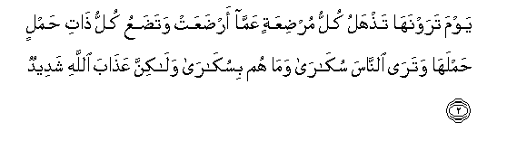
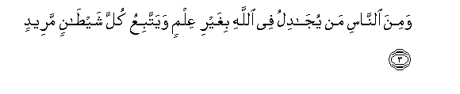
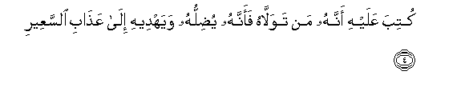
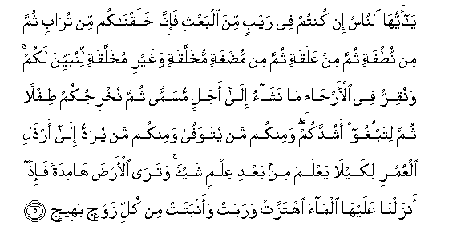
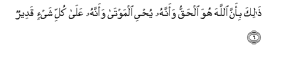
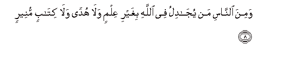
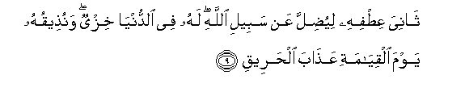
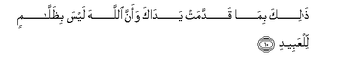

Sacred Texts Islam Index
Hypertext Qur'an Unicode Palmer Pickthall Yusuf Ali English Rodwell
Sūra XXII.: Ḥajj, or The Pilgrimage. Index
Previous Next

The Holy Quran, tr. by Yusuf Ali, [1934], at sacred-texts.com
Sūra XXII.: Ḥajj, or The Pilgrimage.
Section 1
1. Ya ayyuha alnnasu ittaqoo rabbakum inna zalzalata alssaAAati shay-on AAatheemun
1. O mankind! Fear your Lord!
For the convulsion of the Hour
(Of Judgment) will be
A thing terrible!

2. Yawma tarawnaha tathhalu kullu murdiAAatin AAamma ardaAAat watadaAAu kullu thati hamlin hamlaha watara alnnasa sukara wama hum bisukara walakinna AAathaba Allahi shadeedun
2. The Day ye shall see it,
Every mother giving suck
Shall forget her suckling-babe,
And every pregnant female
Shall drop her load (unformed):
Thou shalt see mankind
As in a drunken riot,
Yet not drunk: but dreadful
Will be the Wrath of God.

3. Wamina alnnasi man yujadilu fee Allahi bighayri AAilmin wayattabiAAu kulla shaytanin mareedin
3. And yet among men
There are such as dispute
About God, without knowledge,
And follow every evil one
Obstinate in rebellion!

4. Kutiba AAalayhi annahu man tawallahu faannahu yudilluhu wayahdeehi ila AAathabi alssaAAeeri
4. About the (Evil One)
It is decreed that whoever
Turns to him for friendship,
Him will he lead astray,
And he will guide him
To the Penalty of the Fire.

5. Ya ayyuha alnnasu in kuntum fee raybin mina albaAAthi fa-inna khalaqnakum min turabin thumma min nutfatin thumma min AAalaqatin thumma min mudghatin mukhallaqatin waghayri mukhallaqatin linubayyina lakum wanuqirru fee al-arhami ma nashao ila ajalin musamman thumma nukhrijukum tiflan thumma litablughoo ashuddakum waminkum man yutawaffa waminkum man yuraddu ila arthali alAAumuri likayla yaAAlama min baAAdi AAilmin shay-an watara al-arda hamidatan fa-itha anzalna AAalayha almaa ihtazzat warabat waanbatat min kulli zawjin baheejin
5. O mankind! if ye have
A doubt about the Resurrection,
(Consider) that We created you
Out of dust, then out of
Sperm, then out of a leech-like
Clot, then out of a morsel
Of flesh, partly formed
And partly unformed, in order
That We may manifest
(Our power) to you;
And We cause whom We will
To rest in the wombs
For an appointed term,
Then do We bring you out
As babes, then (foster you)
That ye may reach your age
Of full strength; and some
Of you are called to die,
And some are sent back
To the feeblest old age,
So that they know nothing
After having known (much),
And (further), thou seest
The earth barren and lifeless,
But when We pour down
Rain on it, it is stirred
(To life), it swells,
And it puts forth every kind
Of beautiful growth (in pairs).

6. Thalika bi-anna Allaha huwa alhaqqu waannahu yuhyee almawta waannahu AAala kulli shay-in qadeerun
6. This is so, because God
Is the Reality: it is He
Who gives life to the dead,
And it is He Who has
Power over all things.
7. Waanna alssaAAata atiyatun la rayba feeha waanna Allaha yabAAathu man fee alquboori
7. And verily the Hour will come:
There can be no doubt
About it, or about (the fact)
That God will raise up
All who are in the graves.

8. Wamina alnnasi man yujadilu fee Allahi bighayri AAilmin wala hudan wala kitabin muneerin
8. Yet there is among men
Such a one as disputes
About God, without knowledge,
Without guidance, and without
A Book of Enlightenment,—

9. Thaniya AAitfihi liyudilla AAan sabeeli Allahi lahu fee alddunya khizyun wanutheequhu yawma alqiyamati AAathaba alhareeqi
9. (Disdainfully) bending his side,
In order to lead (men) astray
From the Path of God:
For him there is disgrace
In this life, and on the Day
Of Judgment We shall
Make him taste the Penalty
Of burning (Fire).

10. Thalika bima qaddamat yadaka waanna Allaha laysa bithallamin lilAAabeedi
10. (It will be said): "This is
Because of the deeds which
Thy hands sent forth,
For verily God is not
Unjust to His servants."